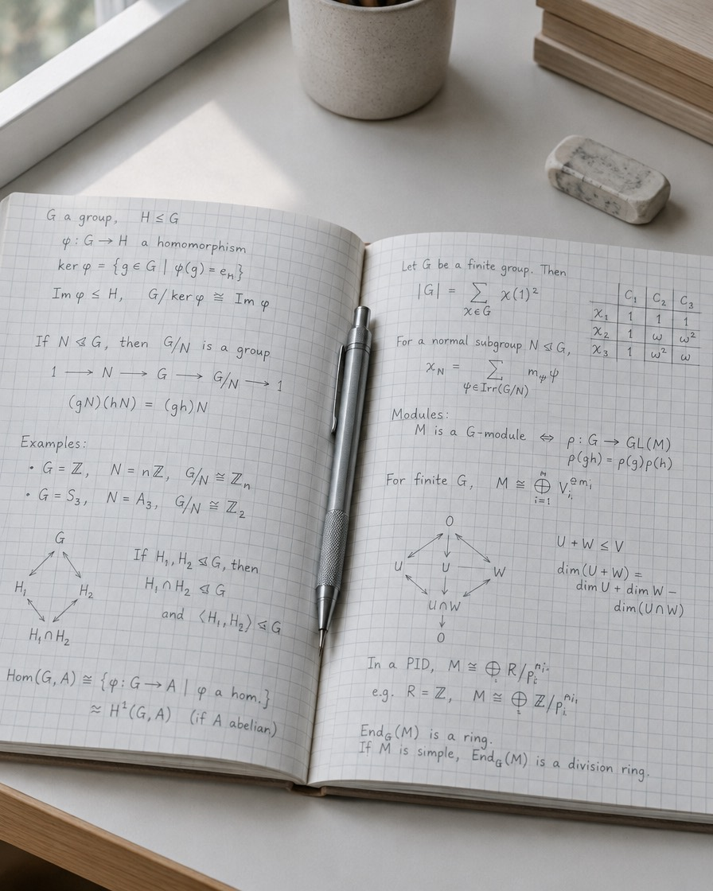
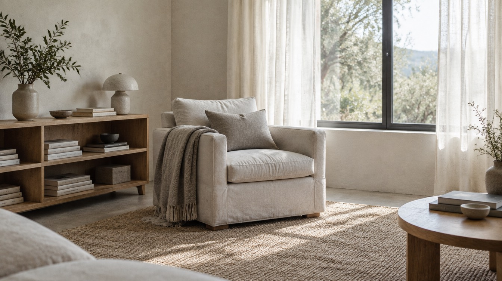
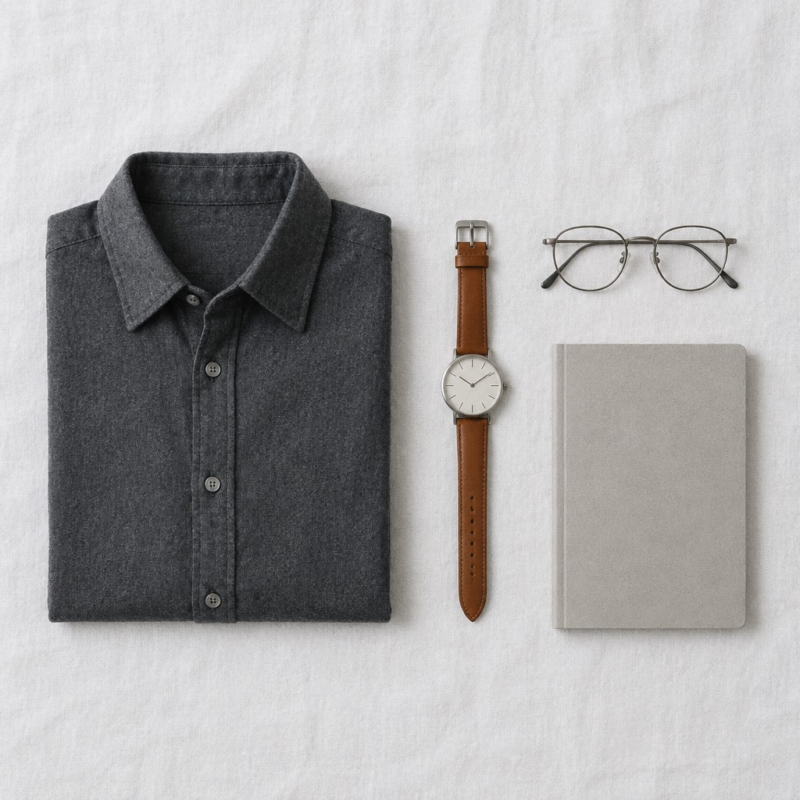

The person behind the work.
I am not interested in being reduced to a job title.

My story
My full name is Alex Akinyele Adekunle. Technology entrepreneur, web developer, based in Nigeria, building on the internet since 2011.
Technology became part of my life because I liked the act of building. A blank screen never felt empty to me. It felt like the most permissive thing in the room.
That curiosity turned into a career, though not in a straight line. I studied Mathematics at the Federal University of Agriculture, Abeokuta, and spent my final year on the application of algebraic coding theory, which is a formal way of saying I spent a year on the mathematics of making information survive a journey it should not survive. At the time it felt entirely disconnected from anything I would do for a living. It turned out to be decent preparation for a career spent making things hold together inside systems that are indifferent to your intentions.
Websites became products. Projects became businesses. Technical skill became a way of seeing bigger problems. In 2021 I founded Vavinix.
Fifteen years in, the instinct has not changed at all: I see something that could be better, I want to know why it is not, and then I want to build the version that is.
The line so far
Not a straight line. A consistent direction.
- 2011 The first build Building on the web begins. Static brochure sites, and the habit of taking things apart to see why they work. Start year
- FUNAAB BSc Mathematics Federal University of Agriculture, Abeokuta. Final year on the application of algebraic coding theory. Degree
- ↗ Websites became products Projects became businesses. Technical skill became a way of seeing bigger problems. The turn
- 2021 Vavinix founded Web design, digital branding and software for businesses across the United States, the United Kingdom, Spain and Nigeria. Company
- Now Four ventures in build Vavinix, Aspire Trybe, OneArtPiece and The Receipt. More is coming. I would rather build than announce. Current
How I work
I think from both sides of the screen.
I care how something looks, and I care what it has to accomplish. I care about clean code, and I care about the business model sitting underneath it. I care about user experience, and I care about trust, positioning, conversion and what the thing is worth in three years.
Most technical people optimise one side of that. Most business people optimise the other, and then the two of them have a tense meeting about it. The work gets interesting when the same person is holding both, because the argument happens inside one head and resolves faster.
What I have learned
You can learn a technology in a month. Learning how to think takes considerably longer and nobody issues a certificate for it.
Tools change. Frameworks change. Platforms change. Markets change, usually the week after you have finished adapting to the last change. What compounds is the ability to learn, adapt, communicate and finish.
And the lesson that took longest: good work is not about getting something done. It is about working out what should be done in the first place. Most of the expensive mistakes I have watched were executed beautifully.
What I believe
Six lines I keep testing.
Curiosity starts it. Building sustains it. Freedom is why it matters. Impact is what keeps it pointed somewhere.
- iBuild before you over-explain.
- iiLearn faster than the environment changes.
- iiiMake technology useful, not merely impressive.
- ivLet the work speak, then it cannot be argued with.
- vGive people systems and opportunities, not only motivation.
- viThink long term, execute today.
Beyond the work
The life around the work.
A personal brand should not only show what you do. It should show what you are doing it for.




Outside the screen
Technology is a large part of my life. It is not all of it, and the years when it nearly was are not years I would repeat.
I care about experiences, style, travel, spaces, conversations, learning, people, and the small details that make a life feel lived rather than scheduled.
The workspace
Environment changes how you think, which sounds like an interiors magazine line until you have tried to solve something difficult in a room you dislike.
I build spaces that make room for focus, creativity and ambition, because the room you work in is a decision you make once and then live inside every day after.
Style
Style is another form of communication. Not the loudest thing in the room. Knowing what represents you, settling it, and then never having to think about it again.
Experiences
The goal is not to collect photographs. It is to collect the experiences that change how you see things, and those two overlap less often than the internet suggests.
The balance
Build seriously. Live intentionally.
The ambition was never to work forever. It is to build something substantial enough to create freedom around the life you actually wanted in the first place.
See the gallery →A work in progress
I am still becoming.
The person on this website is not a finished version of me and I would be worried if he were. There are skills I am still learning, ideas I am still testing, businesses I am still building and questions I have been carrying around for years without an answer.
That is not a weakness, it is the arrangement. Curious enough to change my mind, disciplined enough to finish the things that matter, ambitious enough to keep starting new ones.